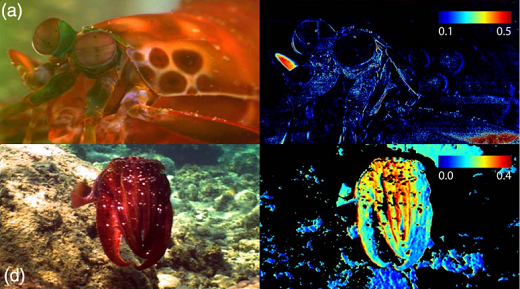
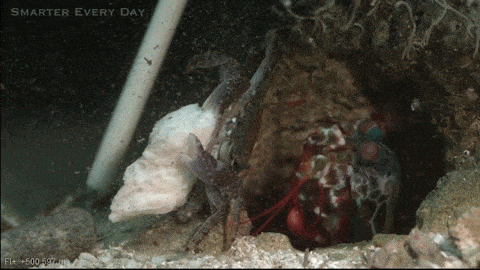

Fatos sobre o Stomatopoda
Classificação científica

Stomatopoda (ou Odontodactylus scyllarus, chamados popularmente de tamarutacas ou de
lacraias-do-mar no Brasil, é uma ordem de crustáceos marinhos da subclasse Hoplocarida, que agrupa cerca de 400
espécies, caracterizadas principalmente pela morfologia da segunda pata torácica, que é modificada em apêndice
subquelado, lembrando uma pata de louva-a-deus.
Abaixo estão algumas informações
científicas, como Reino,
Filo, Subfilo dentre outras.
| Reino: | Filo | Subfilo | Classe | Subclasse | Ordem |
|---|---|---|---|---|---|
| Animalia | Arthropoda | Crustacea | Malacostraca | Hoplocarida | Stomatopoda |
Os Stomatopoda enxergam no espectro ultravioleta e infravermelho!
Os estomatópodes são predadores ativos que caçam presas com o auxílio de um sentido de visão muito apurado e
capaz de interpretar polarização no espectro ultravioleta e infravermelho).
Esses animais
possuem o mais
complexo sistema de visão de cores do mundo animal, pois enxergam 12 cores primárias, correspondentes aos 12
pigmentos distintos presentes em sua retina.
Nossos olhos possuem três tipos desses receptores - que correspondem à luz azul, verde e vermelha -, que nos
permitem perceber o espectro de cores que vemos. Os cães contam com apenas dois tipos de cones (verde e azul), e
é por isso que eles vêm tons de azul, verde e um pouco de amarelo. Muitos anfíbios, répteis, aves e insetos
possuem quatro tipo de cones, o que significa que espécies dessas classes conseguem ver cores que o nosso
cérebro é incapaz de processar.
Soco na velocdade de um tiro calibre .22 (equivalente a 720km/h)
As maiores esmagadoras, tais como exemplares de Odontodactylus scyllarus, são capazes de desferir um dos mais rápidos e violentos golpes do reino animal, um soco que pode apresentar a velocidade de um tiro calibre .22 (equivalente a 720km/h) e uma força de impacto de 60 kg/cm².[3] Essa força esmagadora é a responsável pelo seu título de "lagosta-boxeadora" e é capaz de facilmente quebrar a carapaça de um caranguejo, as conchas duras e calcificadas de gastrópodes ou até mesmo quebrar o vidro reforçado de um aquário.[4][5]